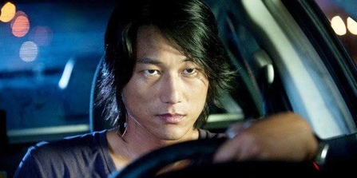

Personagens

Han Lue
O mentor das corridas de drift em Tóquio.
Sean Boswell
O novo desafiante nas ruas do Japão.

Takashi - DK
Conhecido como o "Drift King". Rival perigoso.
Explore o universo de Velozes & Furiosos: Tokyo Drift
Descubra o DriftO mentor das corridas de drift em Tóquio.
O novo desafiante nas ruas do Japão.
Conhecido como o "Drift King". Rival perigoso.
Drift é uma técnica de direção onde o piloto faz curvas derrapando com estilo e controle total. É arte, adrenalina e domínio total sobre o carro.